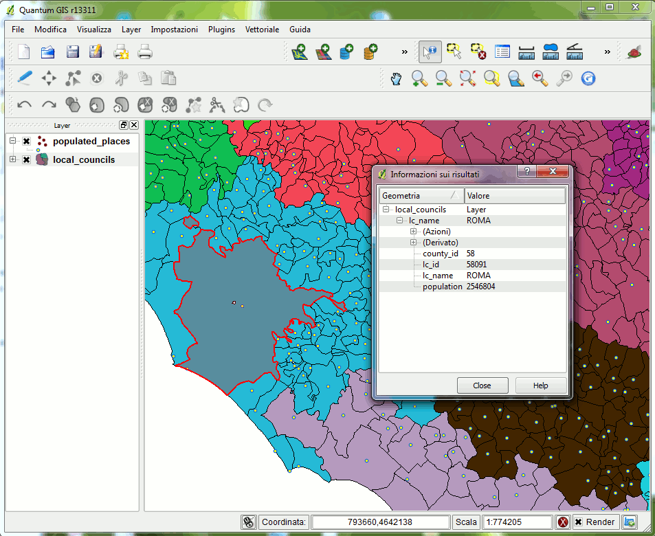

"font-size: 32pt">Viewing SpatiaLite layers in
QGIS
"HTML Tidy for HTML5 for Linux version 5.6.0" />
|
"font-size: 32pt">Viewing SpatiaLite layers in QGIS |
| 2011 January 28 |
| Next |
| QGIS is a
really popular and widespread desktop GIS app: you can download the latest QGIS from: SpatiaLite: |
layer(s) you intend to use.
Please note: accordingly to DBMS terminology you are
accustomed to handle tables.
But in the GIS own jargon the term layers is very often used
to identify exactly the same thing.

Once you've connected your layers from the SpatiaLite DB you can
immediately start using QGIS own tools.
And that's all.
| Next |

"CC-BY-SA logo" /> |
Author: Alessandro Furieri |
| This work is licensed under the
"http://creativecommons.org/licenses/by-sa/3.0/">Attribution-ShareAlike 3.0 Unported (CC BY-SA 3.0) license. |
|
|
|
|
 |
Permission is granted to copy, distribute and/or modify this
document under the terms of the Documentation License, Version 1.3 or any later version published by the Free Software Foundation; Texts. |